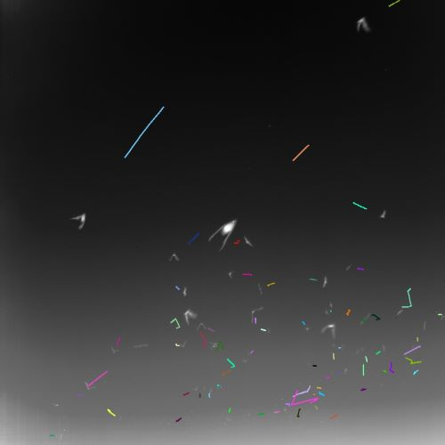

Problem Definition
The goal of the programming assignment was to track moving objects in two different video sequences. The tracking was accompanied by a visual representation of the path that the moving objects created. The first dataset was of bats in flight and the second displayed mouse muscle stem cells. The tracking had to employ a greedy algorithm and either an alpha-beta filter or a Kalman filter to estimate the state of each tracked object.
Method and Implementation
For the bats dataset, we began by loading the images and storing the localization data in a dataframe. Afterwards, we chose to implement the Kalman Filter for predictions and created a cost matrix to find the smallest prediction value for each prediction. Then, we used a greedy algorithm to match the predictions with the measurements present in the image. Using the results, we drew lines for every object to track their paths.
For the cells, we loaded the cell images and used a threshold to binarize them. Then, we used findContour to store the information of each blob and afterwards, calculated the centroid of each blob and stored them as measurements. Similarly to the bats dataset, we used the Kalman Filter for predictions and created a cost matrix. Finally, we used a greedy algorithm to match the predictions with the measurements in the image. To display the results, we drew lines for every object in the frame to track them.
For the bats dataset:
speed(dataset)
kalmanFilter(image_frames, measurements)
costMatrix(A,B) used for data association
greedyAlgorithm(matrix)
data_association(predictions, measures)
bat_track(frames, track_info)
save_images(dir, frames) which stores the frames in a directory and creates a video
For the cells dataset:
All functions in the bats dataset, except for bat_track, along with the following:
contour(img) which finds the contours in the image and returns the coordinates
centroid(current_frame)
trackcells(frames, track_info)
Experiments
Once the code was running we simply inspected the videos using the source frames from the class website to see what was working and what wasn't working. See under the Results header.
Results
Part 1 - Tracking Bats
The video is available in the same directory as this report. The following image is the last frame tracked.
Part 2 - Tracking Cells
The video is available in the same directory as this report. The following image is the last frame tracked.
Discussion
Discuss your method and results:
-
Discussion Topics from the assignment page:
1. Unfortunately, we did not have time to address the special case of when two objects collide. At the moment when two moving objects occlude each other, the tracking lines switch or one of the lines disappears. On the other hand, we were able to successfully implement the case for when a new object enters the frame.
2. This was done within the Kalman filter by comparing the number of measurements and predictions. If the number of measurements was greater than the number of predictions, that meant we had a new object and required a new track. Meanwhile if the number of measurements was less than the number of predictions, that meant an object had left the frame and we needed to delete the track. The deletion is not working exactly, but track lines are definitely disappearing as bats grow smaller and more distant once they're about to leave the frame.
3. See 1. above.
4. If new objects entered the frame, then the system was able to track them by comparing the number of predictions to the number of measurements.
5. We believe that modelling the velocity of the objects would be beneficial because the objects can travel at different speeds. It may also help with the case of occlusion.
Tracking the cells was somewhat difficult due to the thresholding and the brightness of the pixels. Since the pixel values were very similar, parts of the bottom half of the dish were classified as objects. In order to adjust that, we had to restrict the size of the object being tracked.
Conclusions
Based on our results and discussion, we believe that we were relatively successful in tracking bats. If we had more time, we could have implemented more precise segmentation functions for the cells dataset to yield more accurate results. We also would have lengthened the tracking lines so a complete history of tracking would be shown rather than a temporary one.
Credits and Bibliography
To implement the Kalman filter:
http://cs-people.bu.edu/sjzhao/CS585/A4/code/HW4_TrackingCells/kalman_filter.py
To create the videos:
https://theailearner.com/2018/10/15/creating-video-from-images-using-opencv-python/
This assignment was completed in collaboration with Shalei Kumar